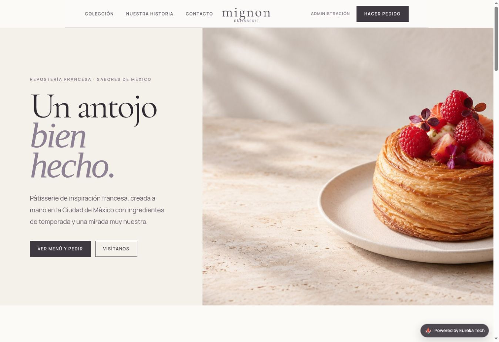

Marca blanca
Nombre, logotipo, colores, tipografías, fotografías, dirección, horarios y WhatsApp propios. Punto Café Lite no aparece en la tienda del cliente.
 Powered by Eureka Tech
Powered by Eureka Tech
Propuesta de implementación
Una tienda personalizada para captar pedidos programados, confirmar pagos y organizar la operación sin pagar comisión por cada venta.

Incluido
Nombre, logotipo, colores, tipografías, fotografías, dirección, horarios y WhatsApp propios. Punto Café Lite no aparece en la tienda del cliente.
Portada, historia del negocio, productos destacados, horarios, ubicación, redes sociales y formulario de contacto.
Títulos y descripciones, estructura semántica, vista al compartir, datos de negocio local, sitemap, robots, textos alternativos y optimización móvil.
Recoger o entrega, datos del cliente, fecha futura y bloques de horario.
Datos bancarios, referencia del pedido y confirmación manual del pago.
Mensajes preparados para comprobante y cambios de estado del pedido.
Pedidos, estados, productos, precios y botón Disponible/Agotado.
Configuración, importación del catálogo completo desde Excel, CSV o archivo equivalente, pruebas, publicación y guía rápida.
Plan recomendado
La mensualidad incluye alojamiento administrado, mantenimiento técnico básico y soporte operativo por mensaje. El dominio se cotiza o conecta por separado.
Alternativa
Incluye la misma implementación y mantenimiento. La permanencia mínima financia el desarrollo inicial.
El plan con implementación cuesta menos durante el primer año. La modalidad mensual reduce el desembolso inicial.
Opciones para crecer
Estas herramientas pueden contratarse posteriormente mediante una actualización de versión.
La disponibilidad, cobertura, cuentas, comisiones y cargos de cada proveedor son independientes.
La tienda puede crecer: comenzar con Punto Café Lite no impide actualizar a Standard ni agregar integraciones más adelante.
Para comenzar
Esta propuesta queda sujeta a confirmar la forma de pago, la modalidad de entrega y los materiales del catálogo. Funciones nuevas se cotizan por separado.